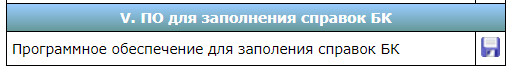

- Необходимо выполнить несколько пунктов:
- Запустить браузер Chrome
- В правом верхнем углу нажать три вертикальные точки
- Из раскрывшегося меню выбрать пункт "История"->"История" (Ctrl+H)
- Слева выбрать пункт "Очистить историю"
- В появившемся окне нажать "Дополнительные", где :
- Во "Временном диапазоне" выбрать пункт "За всё время"
- Поставить все галочки, кроме "Пароли и другие данные для входа" и "Данные для автозаполнения"
- Нажать кнопку"Удалить данные"
- Перезапустить браузер Chrome
Функция ВПР в Excel позволяет данные из одной таблицы переставить в соответствующие ячейки второй. Очень удобная и часто используемая. Т.к. сопоставить вручную диапазоны с десятками тысяч наименований проблематично.
Пример
Допустим, на склад предприятия по производству тары и упаковки поступили материалы в определенном количестве.

Стоимость материалов – в прайс-листе. Это отдельная таблица.

Необходимо узнать стоимость материалов, поступивших на склад. Для этого нужно подставит цену из второй таблицы в первую. И посредством обычного умножения мы найдем искомое.
Алгоритм действий
- Приведем первую таблицу в нужный нам вид. Добавим столбцы «Цена» и «Стоимость/Сумма». Установим денежный формат для новых ячеек.
- Выделяем первую ячейку в столбце «Цена». В нашем примере – D2. Вызываем «Мастер функций» с помощью кнопки «fx» (в начале строки формул) или нажав комбинацию горячих клавиш SHIFT+F3. В категории «Ссылки и массивы» находим функцию ВПР и жмем ОК. Данную функцию можно вызвать перейдя по закладке «Формулы» и выбрать из выпадающего списка «Ссылки и массивы».
- Откроется окно с аргументами функции. В поле «Искомое значение» - диапазон данных первого столбца из таблицы с количеством поступивших материалов. Это те значения, которые Excel должен найти во второй таблице.

- Следующий аргумент – «Таблица». Это наш прайс-лист. Ставим курсор в поле аргумента. Переходим на лист с ценами. Выделяем диапазон с наименованием материалов и ценами. Показываем, какие значения функция должна сопоставить.

- Чтобы Excel ссылался непосредственно на эти данные, ссылку нужно зафиксировать. Выделяем значение поля «Таблица» и нажимаем F4. Появляется значок $.

- В поле аргумента «Номер столбца» ставим цифру «2». Здесь находятся данные, которые нужно «подтянуть» в первую таблицу. «Интервальный просмотр» - ЛОЖЬ. Т.к. нам нужны точные, а не приблизительные значения.

Нажимаем ОК. А затем «размножаем» функцию по всему столбцу: цепляем мышью правый нижний угол и тянем вниз. Получаем необходимый результат.
- На вкладке Вставка нажмите кнопку Верхний колонтитул или Нижний колонтитул.

- Добавьте или измените текст в области с выбранным стилем колонтитула.
- Для удаления колонтитула выберите пункт Удалить верхний(нижний) колонтитул .
| Наименование сервиса | Пример логина | Примечание |
|---|---|---|
| Вход в операционную систему Windows | ia.petrova.46 | Совпадает с логинами для Портала сотрудника фонда и ЕИИС “Соцстрах” |
| Портал сотрудника фонда | ia.petrova.46 | Совпадает с логинами для операционной системы Windows и ЕИИС “Соцстрах” |
| ЕИИС “Соцстрах” | ia.petrova.46 | Совпадает с логинами для операционной системы Windows и Портала сотрудника фонда |
| Информационно-аналитическая система | IPetrova | Выдается после направления письма в ЦА |
| АРМ ввода | RO4600USR100 | Совпадаем с логином для Процессинга и управления выплатами |
| Процессинг и управление выплатами | RO4600USR100 | Совпадает с логином для АРМ ввода |
| АРМ ввода | RO4600USR100 | Совпадает с логином для АРМ ввода |
| Веб-тестер | 46500999 | Табельный номер сотрудника |
Программу для заполнения справок БК можно найти на Интранет-портале по ссылке Для сотрудника/Противодействие коррупции/ в разделе “V. ПО для заполнения справок БК”.

В зависимости от вида и содержимого документа, в нем порой необходимо наличие страниц как с книжной, так и с альбомной ориентацией.
Разместить страницы разной ориентации в одном документе достаточно просто. Разместите курсор в том месте документа, с которого должна измениться ориентация страницы на альбомную. Выберите вкладку меню «Разметка страницы – Параметры страницы»

В открывшемся диалоговом окне на вкладке «Поля» выберите альбомную ориентацию страницы и из выпадающего списка выберите пункт «применить до конца документа» и нажмите «Ок».

После этого все последующие страницы изменят свою ориентацию. Затем, когда возникнет необходимость вернуться к книжной ориентации страниц, проделайте те же самые шаги, выбрав книжную ориентацию
Чтобы увеличить или уменьшить объекты на странице, используйте настройки масштабирования:
- Откройте браузер Chrome на компьютере.
- В правом верхнем углу экрана нажмите на значок "Настройка и управление GoogleChrome"
- В строке "Масштаб" выберите нужный вариант:
- Чтобы увеличить масштаб страницы, нажмите на значок плюса
- Чтобы уменьшить масштаб, нажмите на значок минуса
- Чтобы развернуть окно на весь экран, нажмите на значок полноэкранного режима
Вы также можете воспользоваться сочетаниями клавиш:
- Чтобы увеличить масштаб страницы: Ctrl + Плюс (+).
- Чтобы уменьшить масштаб страницы:Ctrl + Минус (-) .
- Чтобы перейти в полноэкранный режим:F11 .
- Откройте браузер Chrome на компьютере.
- Перейдите на сайт, который хотите добавить в закладки.
- Справа от адресной строки нажмите на значок "Добавить страницу в закладки"